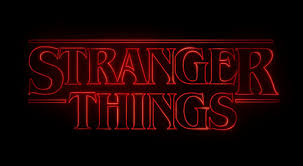
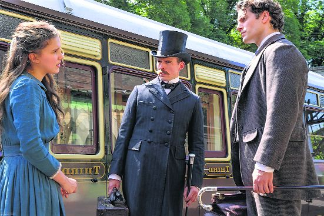
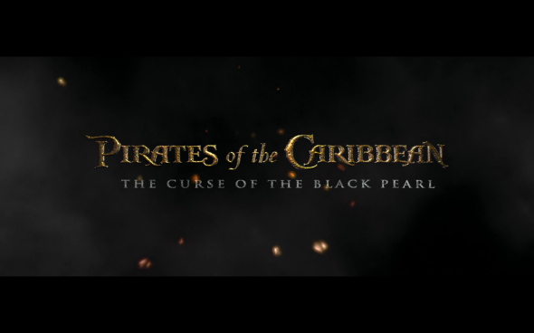

Set in the universe of the first two Ivan Reitman films from the 1980s, “Ghostbusters: Afterlife” tells the story of Callie, a
single mom struggling to survive in Chicago with her two kids, 12-year-old Phoebe and 15-year-old Trevor. When Callie receives news of her
long-estranged father’s passing – a father she never even knew – she and the kids pack up the Subaru and move to ...
Best hidden gems on Netflix platform
Without a doubt, Netflix has some of the greatest streaming entertainment available. You may get the most authentic and interesting
material in every genre, including comedy, horror, romance, thriller, and science fiction. Although Netflix hosts multiple programs, there
is no comparison between Netflix Originals. You’ve come to the perfect place if you’re looking for the hidden ...
Dreams on top of dreams inside dreams
It's said that Christopher Nolan spent ten years writing his screenplay for "Inception." That must have involved prodigious
concentration, like playing blindfold chess while walking a tight-wire. The film's hero tests a young architect by challenging her
to create a maze, and Nolan tests us with his own dazzling maze. We have to trust him that he can lead us through, because ...

Review: What I Loved About Stranger Things 3 (And What I Didn't)
Hi there! It's been a while since I've blogged about books. It's been a while since I blogged, period. I wasn't going to write a
review of a TV show, but then I realized this is my blog, and I can post about whatever I want. If I'm going to take the time to sit
down and write about something, it might as well be something that makes me ...

Enola Holmes
It's been a while since a Netflix film prompted me to write in my cinephile What's App group chat: "ok everybody, I have a fun movie
to suggest." After the boring disappointments of The Devil All the Time and Project Power, after the unspeakable horrors I witnessed
in The Last Days of American Crime, I confess I log in my Netflix account holding my breath. Enola ...

Pirates Of The Caribbean: The Curse Of The Black Pearl
There's a nice little 90-minute B movie trapped inside the 143 minutes of "Pirates of the Caribbean: The Curse of the Black Pearl," a
movie that charms the audience and then outstays its welcome. Although the ending leaves open the possibility of a sequel, the movie
feels like it ...